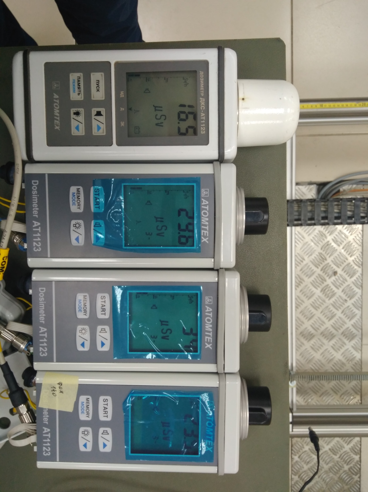
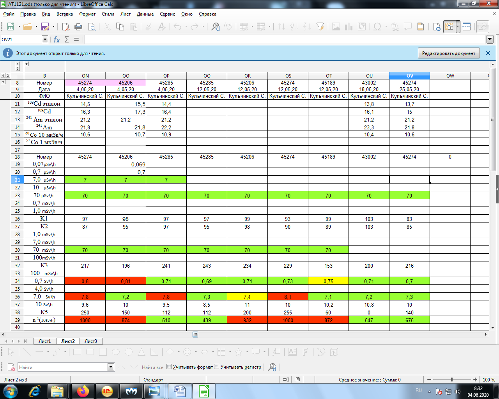
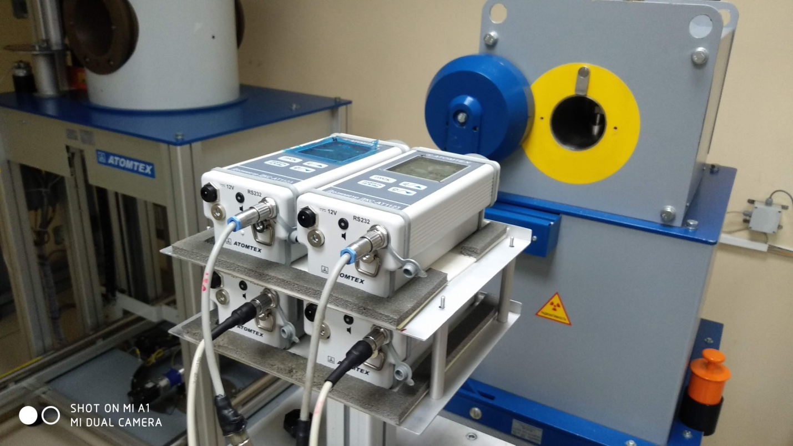
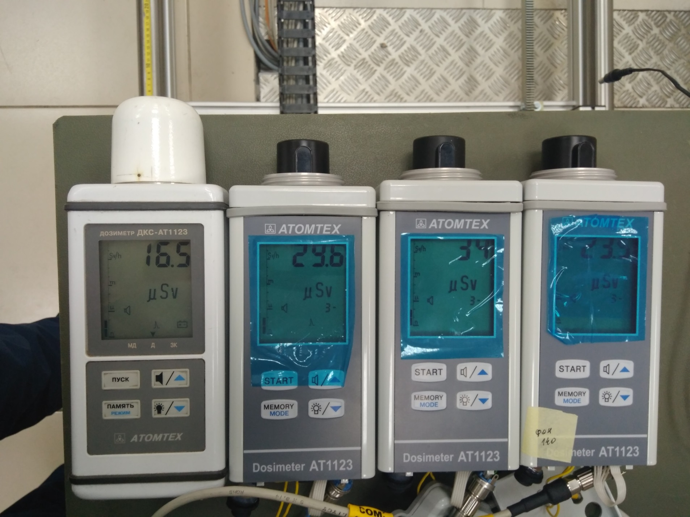
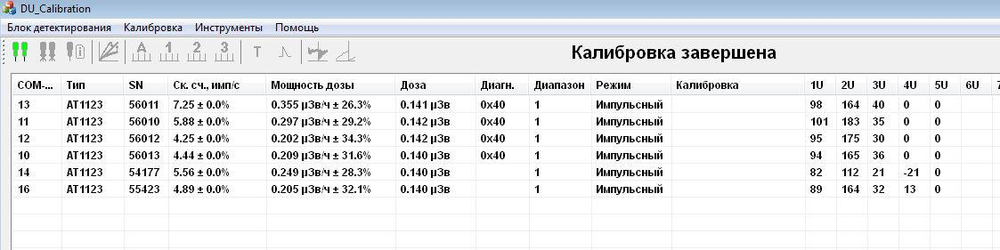
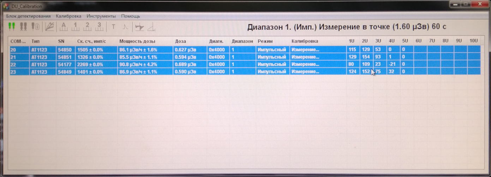
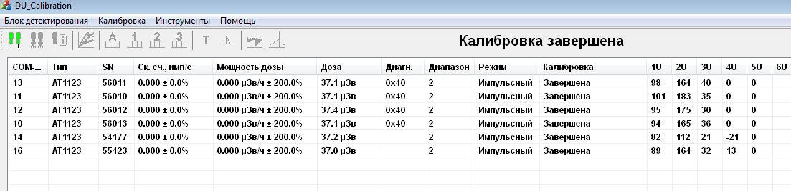
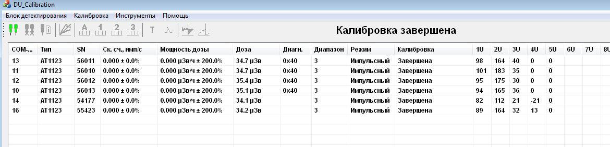
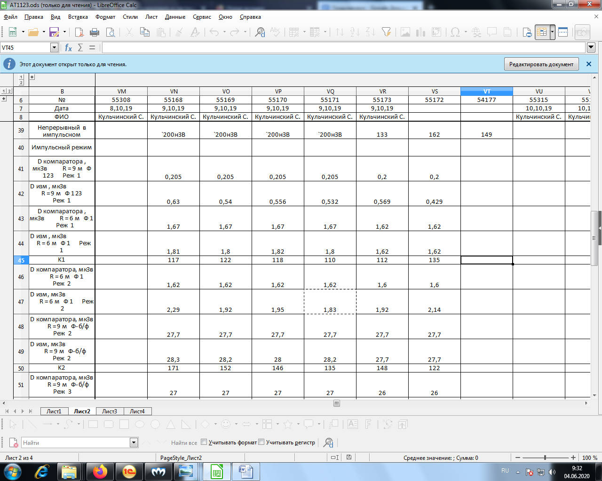

↑
Градуировка ДКС-АТ1123
1 Непрерывная
- Установить 4-е дозиметра на УДГ-АТ110 таким образом, чтобы они расположились параллельно оси излучения, а
расстояние от источника до центра детектора равнялось -10 мм от края торца колпачка

- Подключить к ПК
- Запустить ПО 1121-1123
- Нажать Поиск
- Выбрать дозиметры
- Выбрать калибровка
- Выбрать точку 1 диапазона (7-700 мк)
- Нажать начать измерения
- Установить источник 137Cs 7 мкЗв/ч
- Градуировать показания выставив коэф 1U (д.б.≈100) с учётом фона 0,1 мкЗв/ч
- Снять показания по Cd 1м Am 1м 60Со 10 мкЗв/ч
- Снять точки 70 и 700 мкЗв/ч
- Данные переписать в журнал градуировки

- Установить дозиметры на УДГ-АТ130

- Повторить подключение как на 110
- Выбрать 2 диап(1-100м)
- Нажать начать измерения
- Установить источник 137Cs 100 мЗв/ч
- Градуировать показания выставив коэф 2U (д.б.≈100?)
- Снять точки 7 и 70 мЗв/ч
- Выбрать 3 диап(0,1-10 Зв)
- Нажать начать измерения
- Установить источник 137Cs 100 мЗв/ч
- Градуировать показания выставив коэф 3U (д.б.≈200?)
- Установить источник 137Cs 7 Зв/ч
- Градуировать показания выставив коэф 5U (д.б.≈50?)
- Снять точки 700 мЗв и 10 Зв/ч
- Данные переписать в журнал градуировки
2 Импульсная установка

- Установить приборы на столик установки УДГ-АТ130 Совместно с двумя компараторами

- Установить расстояние до установки шмель-250 7 м на шмель-250 надеть фильтр 1 2

- Подключить дозиметры и компараторы к ПК
- Запустить ПО Du calibration

- Нажать подключить
- Выбрать дозиметры
- Нажать кнопку калибровка импульсный режим
- Выбрать нужные диапазоны
- Начать
- Включить установку шмель-250
- Выбрать интервал 1 мин
- Нажать старт
Накопленная доза д.б. 1,6 мкЗв, что соответствует 96 мкЗв/ч- Накопленная доза д.б. 0,2 мкЗв, что соответствует 12 мкЗв/ч
- Расчетный Коэф 1U ≈100

- Повторить для 2 диапазона
- Только выставить расстояние от приборов до установки Шмель-250 7 м
- Фильтр снять

- Накопленная доза д.б. 30 мкЗв, что соответствует 1,8 мЗв/ч
- Расчетный Коэф 2U ≈ 150
- Повторить для 3 диапазона
- Выставить расстояние от приборов до аппарата «Шмель-250» 7 м
- Накопленная доза д.б. 30 мкЗв, что соответствует 1,8 мЗв/ч

- Расчетный Коэф 3U ≈ 25
- Снять ПСИ согласно таблице:
| Диапазон |
Фильтрация на аппарате «Шмель-250» |
Расстояние от приборов до «Шмель-250», м |
Показания приборов, мкЗв |
Пересчет в МЭД, мЗв/ч |
| 1 |
1 2 |
7 |
0,2 |
0,012 |
| 1 |
1 |
5,5 |
1,6 |
0,096 |
| 2 |
1 |
5,5 |
1,6 |
0,096 |
| 2 |
без |
7 |
30 |
1,8 |
| 3 |
без |
7 |
30 |
1,8 |
- Данные переписать в журнал градуировки
